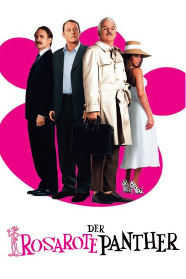
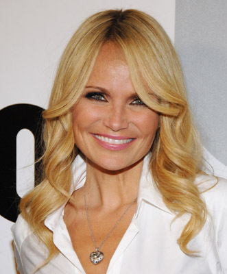
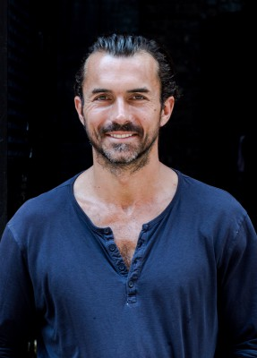
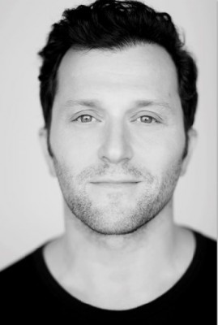
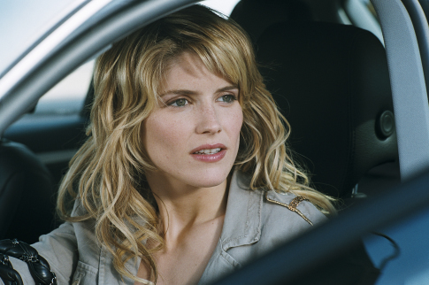
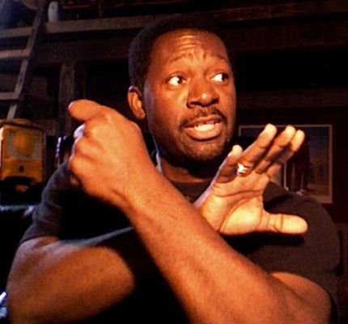
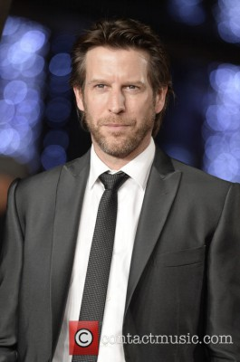
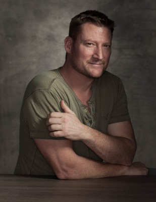
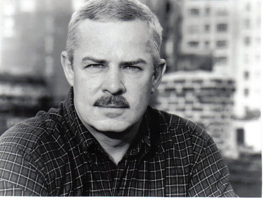

#9326 Der Rosarote Panther
Alternativ: The Pink Panther
 
 IMDB-Wertung: 5.6 / 10
IMDB-Wertung: 5.6 / 10  Metascore: 0
Metascore: 0 
Inspektor Closeau hat einen neuen Auftrag! Der Mord an einem weltbekannten Fußball-Coach und der Diebstahl seines Ringes sorgen für heftigen Trubel in Frankreich. Denn bei dem Ring handelt es sich nicht um irgendein Schmuckstück! Es ist der Ring mit dem legendären Rosaroten Panther-Diamanten! Natürlich braucht die französische Polizei bei solch einem spektakulären Fall auch nicht irgendeinen Inspektor… Denn nur ein absoluter Meister ist in der Lage dieses hinterlistige, abscheuliche Verbrechen aufzuklären. Aber der hatte leider keine Zeit, also setzen sie Inspektor Closeau auf den Fall an.
Jahr: 2006
Dauer: 92 Minuten
FSK: 6
Land: USA Studio: Sony Pictures ReleasingTonspuren:
Untertitel:
Auflösung: 1080p (1920x1040) Größe: 7127 MB
Genre: Komödie, Abenteuer, Krimi, Familie, Mystery
Regisseur: Shawn Levy
Drehbuch: Len Blum
Soundtrack: Christophe Beck
Darsteller:
 Steve Martin als Clouseau
Steve Martin als Clouseau Kevin Kline als Dreyfus
Kevin Kline als Dreyfus Jean Reno als Ponton
Jean Reno als Ponton Emily Mortimer als Nicole
Emily Mortimer als Nicole Henry Czerny als Yuri
Henry Czerny als Yuri-  Kristin Chenoweth als Cherie
 Roger Rees als Raymond Larocque
Roger Rees als Raymond Larocque- Beyoncé als Xania
-  William Abadie als Bizu
-  Daniel Sauli als Music Producer
 Anna Katarina als Agent Corbeille
Anna Katarina als Agent Corbeille- Nick Toren als Agent Savard
 Scott Adkins als Jacquard
Scott Adkins als Jacquard Boris McGiver als Vainqueur
Boris McGiver als Vainqueur-  Alice Taglioni als Female Reporter
 John Cenatiempo als Thug in Alley
John Cenatiempo als Thug in Alley-  Chuck Jeffreys als Thug in Alley
-  Andrew Tarbet als TSA Agent
 Dexter Bell als Terry Ahkee-Sauce
Dexter Bell als Terry Ahkee-Sauce- Kristi Angus als Mysterious Woman
-  Aaron Pearl als K9 Guard
 Sean Tyson als National Guard
Sean Tyson als National Guard- Chelah Horsdal als Security Guard
- Lucas Tavernier als Street Reporter
- Delphine Chanéac als Ticket Checker
- Yvonne Sciò als Casino Waitress
- Davide Borella als Gas-Mask Bandit
-  Michael Arthur als Officer #1 (uncredited)
 David Boston als Blackjack Dealer (uncredited)
David Boston als Blackjack Dealer (uncredited)- Dominick Cicco als Pedestrian (uncredited)
 Ty Copeman als Airline Pilot (uncredited)
Ty Copeman als Airline Pilot (uncredited)- Amir Darvish als Arab (uncredited)
- Monty C. Floyd als Waldorf Door Man (uncredited)
- Thomas Ho als Chinese Footballer (uncredited)
- Paul Korda als Pierre Fuquette (uncredited)
- Jacqueline Lovell als Waitress (uncredited)
- Susan McBrien als Strolling Pedestrian (uncredited)
 Clive Owen als Nigel Boswell / Agent 006 (uncredited)
Clive Owen als Nigel Boswell / Agent 006 (uncredited)- Americo Presciutti als Croupier (uncredited)
- Marc Raco als Sneezing Man on Airplane (uncredited)
- Marty Eli Schwartz als Maintenance (uncredited)
- Kenny Shapiro als Kissing Couple in Airplane Bathroom (uncredited)
 Jason Statham als Yves Gluant (uncredited)
Jason Statham als Yves Gluant (uncredited)- Mira Tzur als Escort (uncredited)
 Alexander von Roon als French Townsman #1 (uncredited)
Alexander von Roon als French Townsman #1 (uncredited)- Kevin Watson als Plumber (uncredited)
- Philip Goodwin als Deputy Chief Renard
- Henri Garcin als President
- Jean Dell als Justice Minister Clochard
- Sally Leung Bayer als Yu / Chinese Woman
Datei: X:\7+mehr(A-Z)\Rosarote Panther\Rosarote Panther, Der (2006, FSK6, 1920x1040).mkv seit 27.07.2018
Festplatte: HD Collection-7+mehr(A-Z)+Person
 Es gibt insgesamt 13 Filme in der Gruppe '7+mehr(A-Z)\Rosarote Panther'
Es gibt insgesamt 13 Filme in der Gruppe '7+mehr(A-Z)\Rosarote Panther'